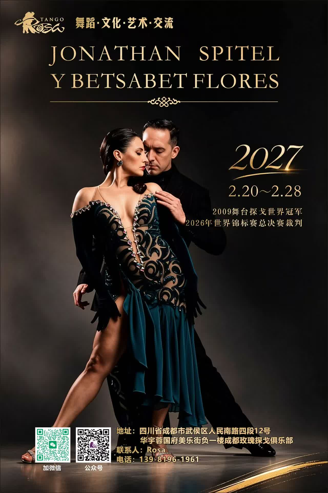

Dance · Culture · Art · Exchange · Feb 20–28, 2027 · Chengdu, China
Tango Rosa Chengdu (成都玫瑰探戈俱乐部)四川省成都市武侯区人民南路四段12号华宇蓉国府美乐街负一楼B1, Meile Street, Huayu Rongguofu, No. 12, Section 4, Renmin South Road, Wuhou District, Chengdu, Sichuan
Class schedule and prices: TBA. Please contact the organizer.
Source: organizer's poster shared in WeChat tango groups (Oct 2026). Please confirm details with the organizer.